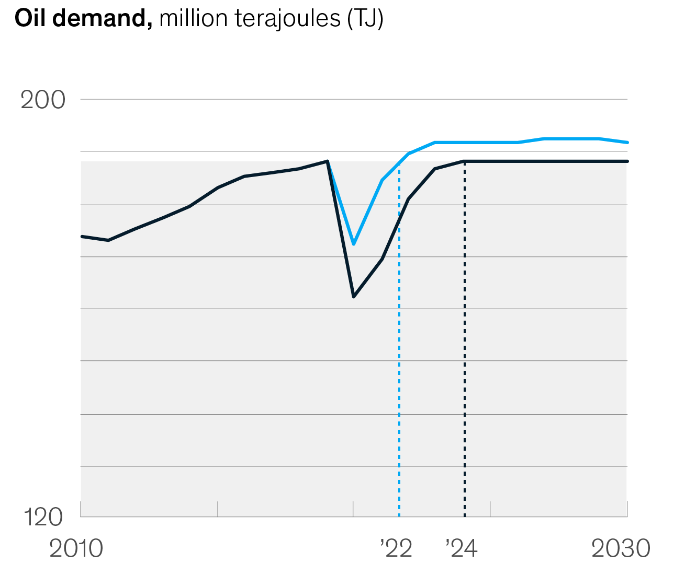

Global
Energy
Perspective
2021
The Global Energy Perspective describes our
view on how the energy transition can unfold, through four scenarios.
The global energy landscape is going through major shifts
We publish this long-term energy outlook at the start of 2021, after a year that has brought extraordinary challenges. The COVID-19 pandemic and subsequent economic crisis caused unprecedented disruption in the energy landscape—and the path to recovery remains uncertain.
At the same time, the world’s energy systems are going through rapid transitions that are triggered by simultaneous shifts in technological development, regulations, consumer preferences, and investor sentiments. Our Reference Case sheds light on these developments and provides a synthesis on how energy demand will evolve.
Download the summary
The impacts of COVID-19 have permanently shifted energy-demand curves. Although demand rebounds to 2019 levels in one to four years, it does not return to the previous growth path. Electricity and gas rebound more quickly than oil demand, and coal does not return to pre-COVID-19 demand levels.
Recent work by McKinsey on the effects of the COVID-19 crisis on economic growth introduces a set of scenarios, reflecting varying levels of effectiveness of the public-health response and speed and strength of policy interventions.
From these scenarios, two were selected as most likely outcomes by a group of more than 2,000 executive respondents globally: “Virus Contained; growth returns” and “Muted Recovery.” At the time of this report’s publication (January 2021), the latest actual numbers show a trajectory that comes closest to “Virus Contained; growth returns.” Consequently, this scenario underlies the projections in our report.
Given the unparalleled size of many economic-recovery packages, the focus of the stimulus measures plays a key role in shaping energy systems in the decades to come.
In the short term, a return to pre-COVID-19 levels is projected in one to four years
As economies and energy markets recover from the
short-term impact of COVID-19, fundamental shifts in the energy system continue, and the coming decades will likely see a rapid acceleration of the energy transition.
In the longer term, fundamental shifts already
emerging pre-COVID-19 are going to be the key drivers
of the energy transition
Energy efficiency
Despite rapid shifts in the Reference Case, global
greenhouse gas emissions decline only by 25% by 2050, implying a 3.5°C pathway
Change is too slow to reach a 1.5°C Pathway
2023
–25%
Moving to a 1.5°C Pathway requires stronger ambitions and accelerated implementation at a global scale*
To learn more about our comprehensive Global Energy Perspective, contact us.
Download the summary
Contact us

Projected peaks in demand for hydrocarbons have come forward. Oil demand peaks in 2029 and gas in 2037, whereas coal shows a steady decline.
Yet in the Reference Case fossil fuels continue to play a major role in the energy system by 2050, driven by growth in areas such as chemicals and aviation.
In the Accelerated Transition scenario, demand for fossil fuels continues to decline, particularly oil and coal. Peak oil demand could move forward by five years to the early 2020s, at a level less than 1 MMB/D above 2019 levels.
Peaks in fossil-fuel demand keep coming closer
Gas
Oil
Coal
Gas continues to increase its share of global energy demand in the next ten to 15 years—the only fossil fuel to do so—and then peaks in the late 2030s. Even in the Reference Case, gas demand in 2050 is 5% higher than today
After a long period of growth, global liquids demand peaks in the late 2020s, followed by a 10% decline in demand by 2050. This is mainly driven by slowing car-park growth, enhanced engine efficiency in road transport, and increased electrification
The energy intensity of the global GDP drops
by 2050 because of energy-efficiency gains coming from technological advancements and fuel switching
40%
As an example, EV passenger cars require
less energy compared with conventional ICE engines
3–4 times
Energy consumption per capita drops by
from 2019 to 2050, despite strong economic development that affects billions of people during that same period
5% globally
Emerging economies*
their share of the global energy mix,
with particularly strong growth in Africa, ASEAN, and India (from 24%
to 34%)
double
China sees a
in energy demand as of 2030
plateau
in energy demand by 2050, triggered by a decline in population and enhanced efficiency
20% drop
Global power demand
from 2020 to 2050
doubles
*McKinsey’s view of a pathway that limits global warming to 1.5ºC, across sectors and energy products
RELATED RESEARCH
Global oil supply-
and-demand
outlook to 2040
COVID-19 sent shocks through global oil markets, with oil demand and supply still struggling to return to pre-pandemic levels. Our outlook looks back at 2020 and presents our most-likely scenarios for oil demand, supply, and prices through 2040.
By 2035, more than
of global power generation will come from renewable sources.
50%
Renewables become cheaper than existing fossil plants within the next decade. This triggers a sharp uptake in the installed capacity of solar photovoltaics and onshore and offshore wind (5 TW of new solar and wind capacity installed by 2035—which is equivalent to fivefold growth).
. . . and low-cost renewables dominate power markets
Power consumption doubles by 2050 as energy demand electrifies, wealth increases, and green hydrogen picks up momentum.
Power wins and hydrogen changes the landscape . . .
North American and the EU-27 plus the United Kingdom face a
Increased remote working and reduced willingness to fly can reduce global oil demand by
by 2035 (versus a decrease of 19 MMB/D because of growing fuel efficiencies and increasing fuel uptake, and an increase of 32 MMB/D through economic growth)
2 MMB/D*
The share of electricity in the energy consumption mix grows to
by 2050 (from 19% today). Hydrogen represents 40% of the growth in power demand from 2035 to 2050
30%
Global coal demand peaked in 2014 and continues to decline by almost 40% from 2019 to 2050. Under increasing regulatory and financial pressure, coal’s role in the power sector diminishes, contributing to the overall decline in demand
Download the summary
< Back
Next >
< Back
Next >
02–04
03–04
04–04
01–04
Energy efficiency
Regions of growth
Regions of growth
Electrification
Electrification
Behavioral shifts due to
COVID-19
Behavioral shifts due to
COVID-19
Contact us
Download the summary
*Including Africa, ASEAN (Brunei, Cambodia, Indonesia, Laos, Malaysia, Myanmar, the Philippines, Singapore, Thailand, and Vietnam), India, and Latin America.
thousand TWh
24
26
29
32
36
41
47
54
Power generation mix,
Gross energy-related emissions,
billion tCO equivalent
Fossil-fuel demand,
million TJ
0
250
2
*Million barrels per day.


Global gas outlook
to 2050
While we saw high levels of volatility in 2020, the outlook for gas and LNG shows strong growth, resilience, and changing expectations for emissions amid widespread carbon-neutrality aspirations.